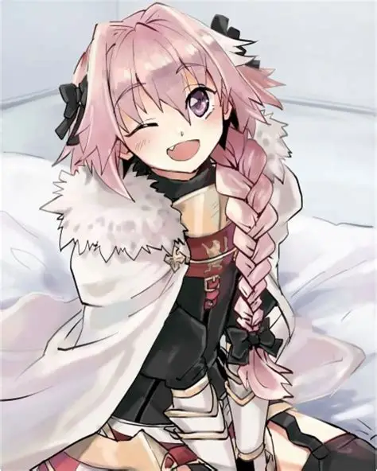
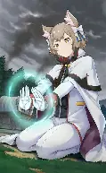
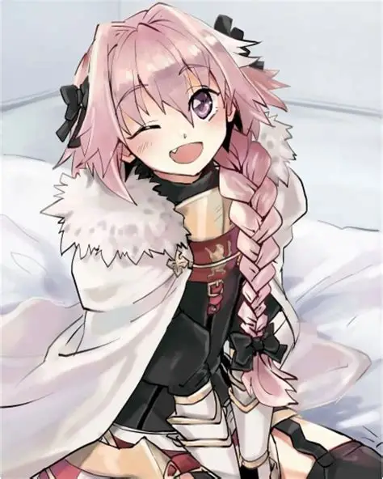
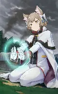
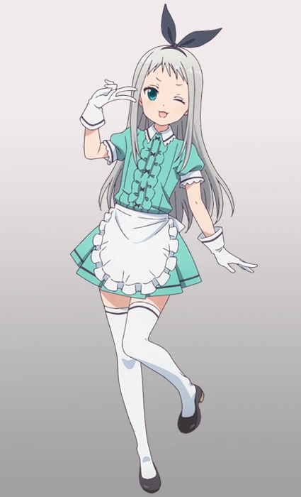
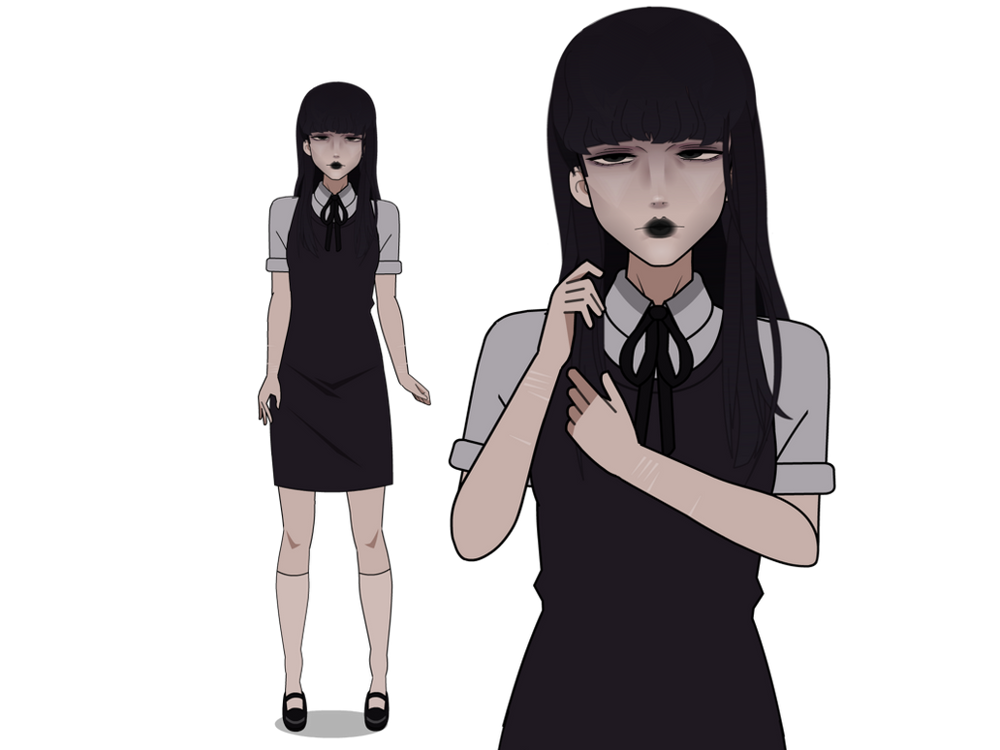
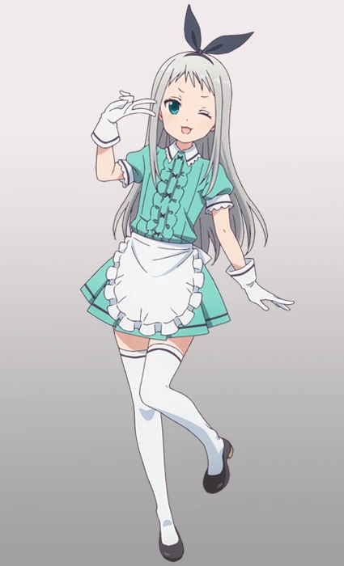
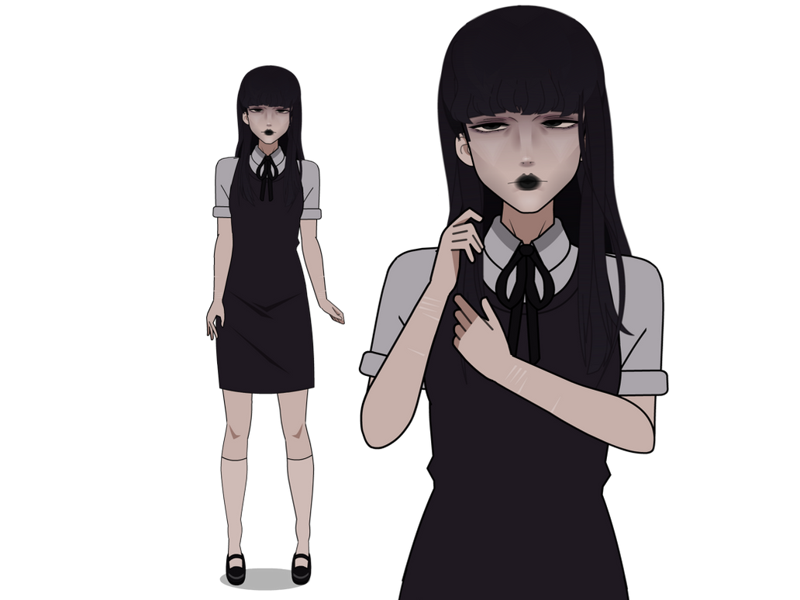

.webp)
.webp) 



Victor un joven tranquilo cuyos gustos son caros
Emilio un verdadero amigo de almohada mientras no lo saques de su cama seguira contigo
Edgar si tan solo tuviera un deseo pediria que (Censurado por la comunidad)
Alejandro pese a su increible altura le gusta el trato de princesa y que lo atiendan todo el rato
Astolfo también conocido como Rider del "Negro" ("黒"のライダー, "Kuro" no Raidā?) es el servant de clase rider de Celenike Icecolle Yggdmillennia en la Gran Guerra del Santo Grial de Fate/Apocrypha.
Felix es un caballero, médico y miembro de la Guardia Real del Reino de Lugunica. Es el caballero de Crusch Karsten, de quien se preocupa mucho y quedó horrorizado cuando se enteró de que fue víctima de Ley.
Saika Totsuka es un personaje que ha capturado la atención de los fans de "My Teen Romantic Comedy SNAFU!" por su encanto y su habilidad en el tenis. A pesar de su apariencia femenina, Saika es un chico que se esfuerza por ser lo más masculino posible
Luka Urushibara (漆原るか Urushibara Ruka?) is a close friend and classmate of Mayuri Shiina and so-called protégé of Rintaro Okabe. While feminine in appearance and personality, Luka is a male on most world lines.
Hideri Kanzaki (神崎 ひでり Kanzaki Hideri) es la quinta incorporación de Café Stile, contratado por su adorable apariencia. El personal se sorprende bastante, y no es porque Hideri interprete a una cantante idol, aunque nunca canta.
Ella parece ser una joven insegura con tendencias de acoso y un interés específico en Marina. Samarie es una de las catorce concursantes que llegan a Prehevil para el Festival Termina.